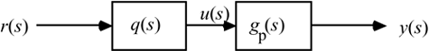

| [ Team LiB ] |
|
M5.5 Internal Model Control (Chapter 8)Here, we assume that the concentration sensor has a measurement delay of 0.5 minutes, and we use the following process transfer function: Open-Loop Controller Design and ImplementationConsider the open-loop control block diagram shown in Figure M5-5, where r(s) represents a desired setpoint change in the concentration of B (mol/liter), u(s) represents the manipulated input dilution rate (min-1), and y(s) represents the measured concentration of B (mol/liter). Figure M5-5. Open-loop control block diagram. Problem 1. Design an open-loop controller that gives a first-order + time-delay response for a setpoint change. Assume that the model perfectly captures the process behavior, so that . For this part, do not factor out the RHP zero to form the controller. Perform simulations to show that the manipulated variable grows unbounded when a step setpoint change is made, although good performance of the output is achieved. Assume a setpoint change of magnitude 0.1 mol/liter. For the following parts, assume that the all-pass factorization technique is used. Problem 2. Find q(s) using an all-pass factorization. Problem 3. Assume the model is perfect.
Problem 4. Discuss how process gain uncertainty degrades the performance. For example, if the real process gain varies between 0.3 and 0.8 (mol/liter)/min-1, what is the offset that results from using the nominal model for control system design? Assume no disturbance and a setpoint change of -0.1 mol/liter. Internal Model Controller ImplementationA problem with open-loop "control" is that the model must be perfect to obtain offset-free performance. Also, unmeasured disturbances can cause deviations from setpoint. The IMC implementation, shown in Figure M5-7, handles these problems. Figure M5-7. IMC implementation.Use SIMULINK to construct this block diagram. Problem 5. a–c. Using the same controller design (all-pass factorization) used in Problems 2 and 3, show that the IMC structure gives exactly the same results for a perfect model (process = model) and no disturbance. That is, show the same results as for 2 and 3a–c.
Problem 6. Discuss how gain uncertainty degrades the performance. Keep the process model transfer function the same but let the actual process gain vary between 0.3 and 0.8 (mol/liter)/min-1. Show the IMC performance for step setpoint changes of –0.1 mol/liter. Question: Does the higher gain or lower gain process cause more of a control problem? Problem 7. Discuss how dead-time uncertainty degrades the closed-loop performance. That is, keep the model dead time the same, but vary the process dead time. Do process time delays that are larger than the model time delays cause more of a problem than process time delays that are smaller than the model time delays?
|
| [ Team LiB ] |
|